Robotics · Automation · Embodied AI
About Me
Dr. Guangda Chen currently serves as a Senior Robot Engineer at Fuxi Robotics in NetEase. He holds a Ph.D. degree in Computer Science from the USTC (2021).
Projects
Research and development projects spanning heavy machine automation, deep reinforcement learning-based navigation and service robotics.
Publications
Academic publications, conference presentations, and granted patents in robotics, artificial intelligence, and autonomous systems.
Contact Information
Email: cgdsss@mail.ustc.edu.cn; cgdsss@zju.edu.cn
Address: NetEase, 399 Wangshang Road, Binjiang District, Hangzhou, China
Biography
Dr. Guangda Chen is currently working as a Senior Robot Engineer at Fuxi Robotics in NetEase. He received his Ph.D. degree in Computer Science from University of Science and Technology of China in 2021 (BA17011, advised by Prof. Xiaoping Chen in the USTC Robotics Laboratory). Before joining USTC Robotics Lab in 2015, he received a Bachelor of Administration from China Medical University in 2014. As a graduate student, he focused on researching mobile robot navigation in dynamic and crowded environments. Currently, he is dedicated to developing and applying innovative automation and intelligent technologies in heavy construction machinery.Find him on:
Employment
Education
Ph.D. in Computer Science
University of Science and Technology of China [Prof. Xiaoping Chen]
Unmanned Loader (2023 - Present)
- High-Precision Hydraulic & Propulsion Control (Diesel / Electric)
- Autonomous Mobility & Navigation
- Efficient and Robust Shoveling Control System [Paper]
- Industry's First Embodied AI-based Autonomous Stacking
- Multi-Terminal Remote Control & Assistance System
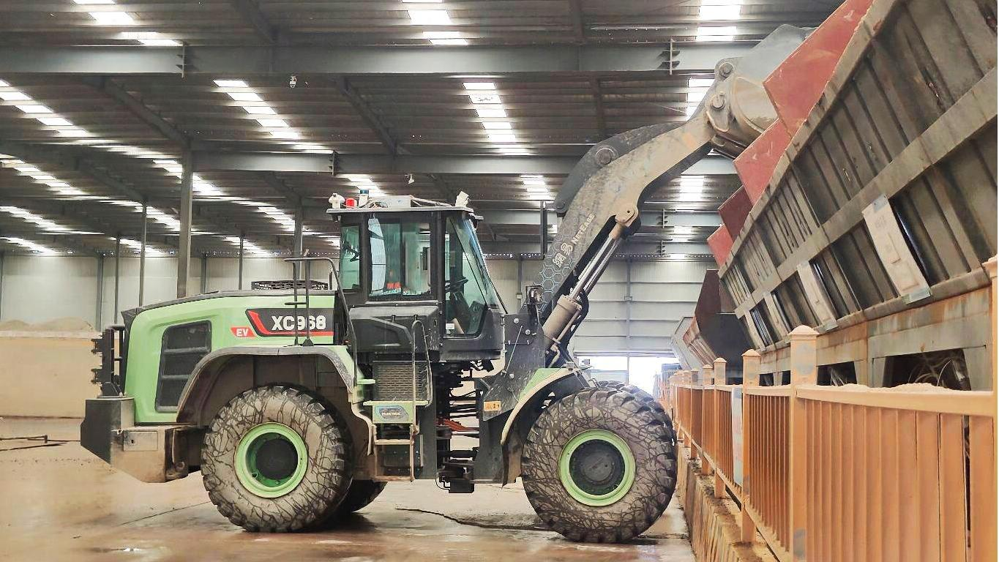
Excavator Robot (2021 - 2023)
- Hydraulic Actuation Control
- Autonomous Digging
- Autonomous Navigation
- Game-Inspired Teleoperation
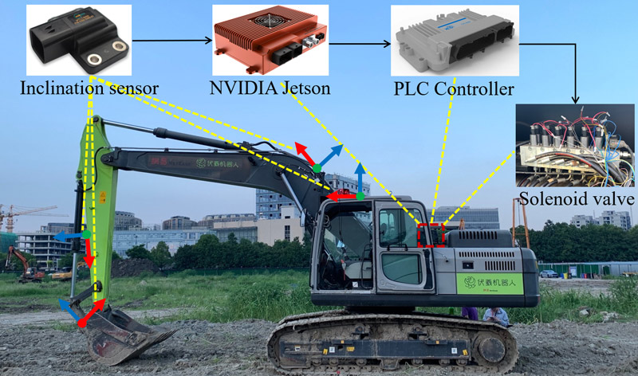
DRL-based Navigation (2019 - 2021)
Panda Robot (2020 - 2021)
Group Leader, (PhD thesis, Ch. 4 and Ch. 5)
- Pedestrian detection and tracking, [Demo]
- Long-term robust localization, [Demo]
- Navigation in dense crowds, [Brief Demo], [Full Demo]
- Tour guide service v1.0, [Demo]
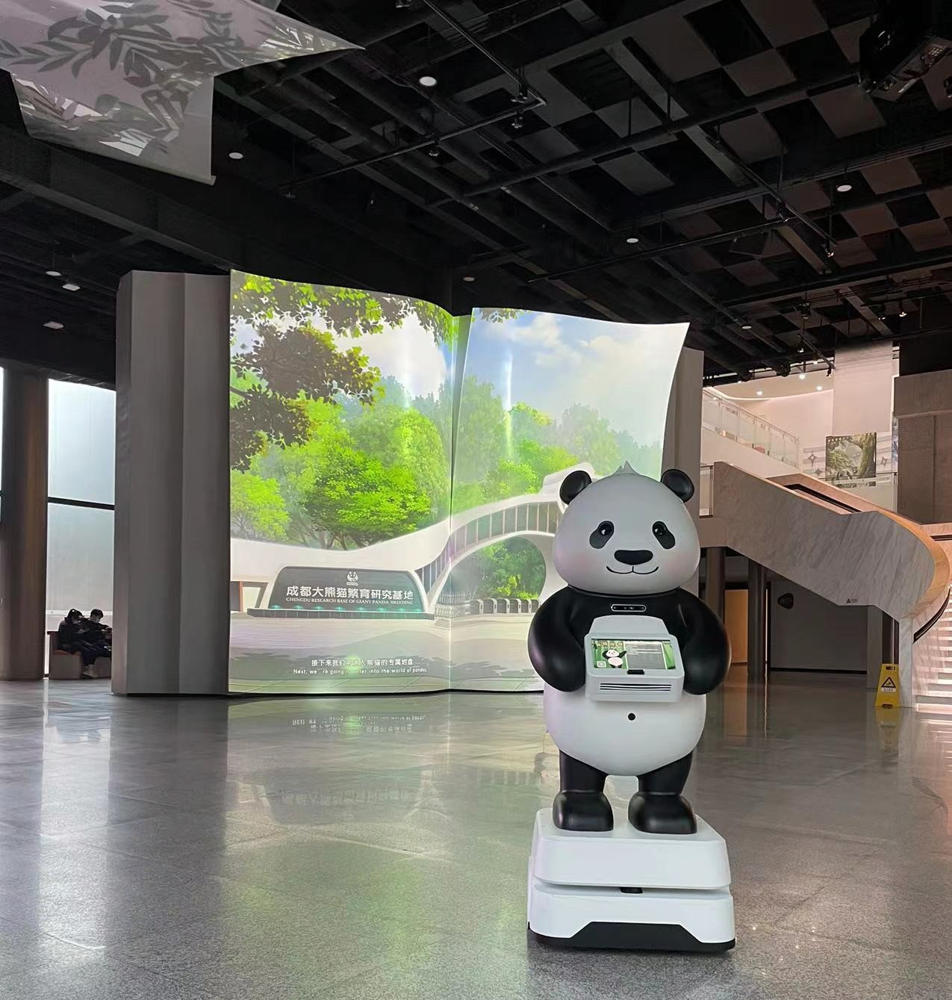
Kejia Robot (2015 - 2019)
Team: WrightEagle@Home
[TDP ], [Poster ], [Report ], [Demo]
| Event | Location | Award | Role |
|---|---|---|---|
| RoboCup China Open@Home 2015 | Guiyang | Champion | Major |
| RoboCup@Home 2016 | Leipzig | 3rd Place | Major |
| Pre-RoboCup Asia-Pacific 2017 | Beijing | Champion | Major |
| RoboCup@Home 2017 | Nagoya | Best Manipulation | Major |
| IJCAI-2019 Eldercare Robot Challenges | Macau | Champion | Leader |
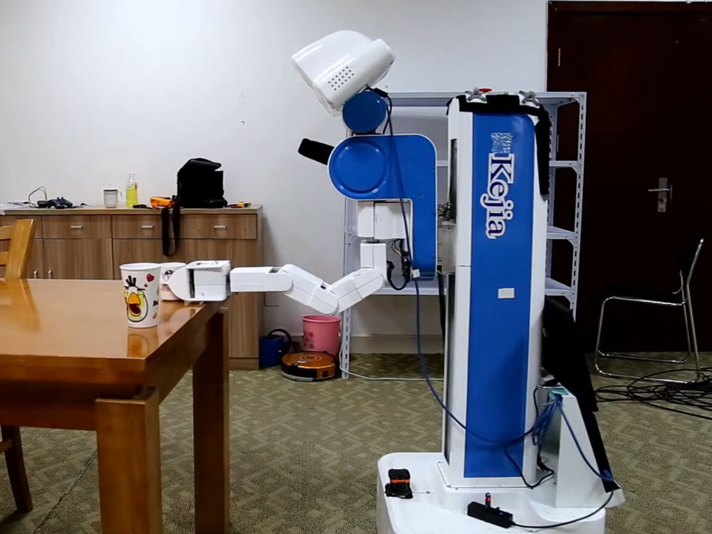
MoCap System (2016 - 2018)
for Testing:
- Cleaning Robots Test
- Anhui Robot Technology Standard Innovation Base
for Calibration:
- General Batch-Calibration Framework
- RGB-D Cameras Calibration
for Training:
- Real Simulation Unified Platform
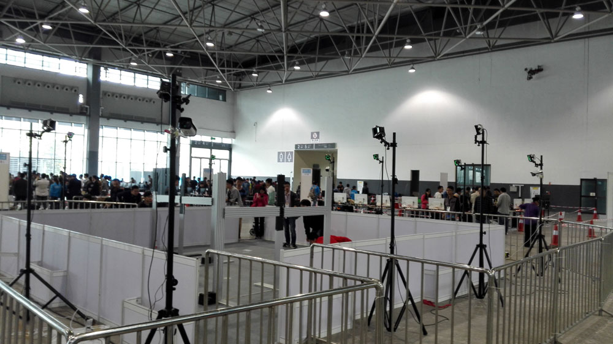
Selected Publications
All publications: Google Scholar, ResearchGate.
* These authors contributed equally to the work.
Conference Presentations
Selected talks and presentations at academic conferences and industry events.
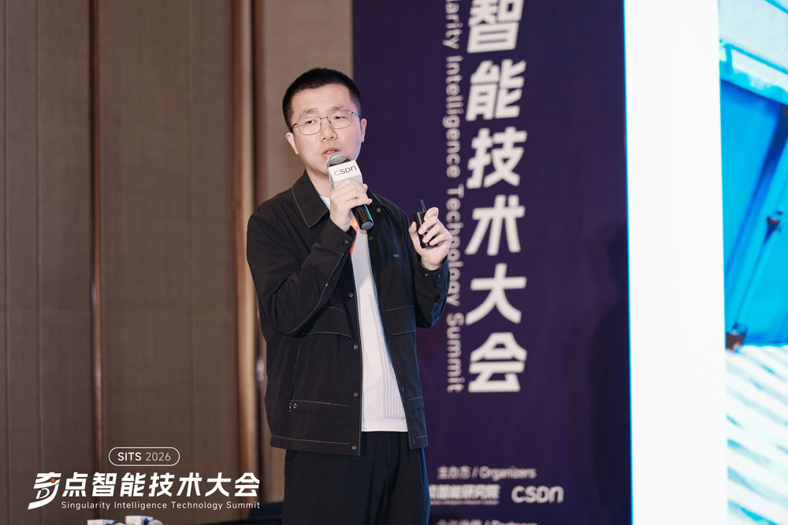
CSDN奇点智能大会数据驱动算法：无人装载机全流程作业的规模化实践
CSDN奇点智能大会
April 18, 2026 | 环球港, 上海
在工程机械行业面临用工荒、安全风险与效率瓶颈的多重挑战下，装载机的无人化转型已成为产业升级的核心突破口。本次演讲聚焦网易灵动在拌合站等真实工业场景的规模化落地实践，深度解析如何构建数据驱动的技术闭环，系统性攻克无人装载机从 “移动导航”“精准铲料” 到 “智能堆料” 的全流程作业难题。
报告官方链接：大会官网
Event Photos
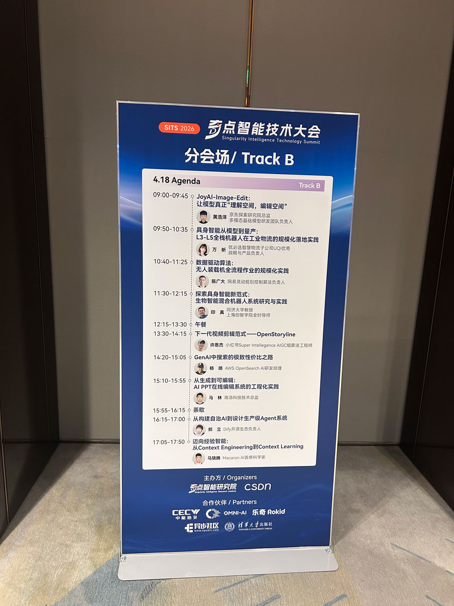
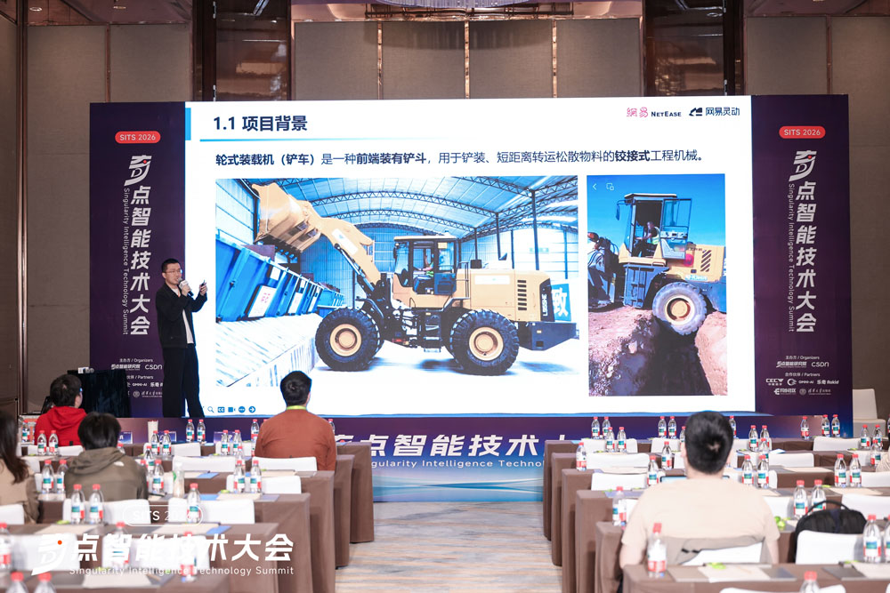
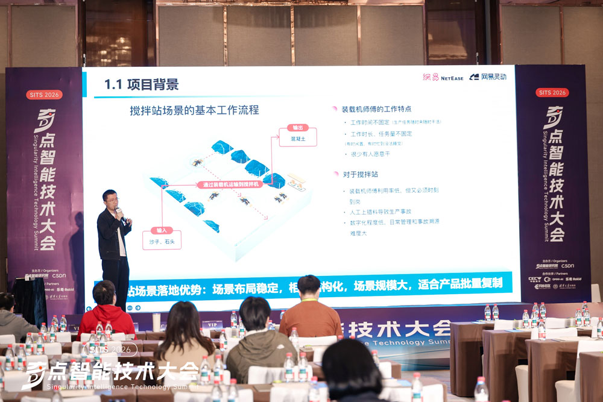
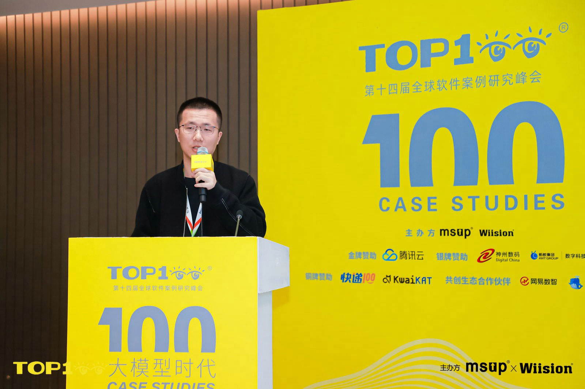
Top100全球软件案例研究峰会装载机无人化破局之路：数据驱动算法的全流程深度实践
Top100全球软件案例研究峰会
November 22, 2025 | 中关村, 北京
由MSUP主办的第十四届TOP100全球软件案例研究峰会（简称：TOP100 Summit）在北京圆满闭幕。本届峰会以“面向未来的组织演进与创新管理”为主题，汇聚了全球100余位技术创新者，探讨生成式AI、软硬件集成等趋势下的组织变革路径，为观众提供实用的指导和启示。大会期间，网易伏羲规控算法负责人陈博士发表了题为《装载机无人化破局之路：数据驱动算法的全流程深度实践》的演讲，系统分享了团队在装载机无人化领域的技术探索与实践经验。
更多媒体报道：网易伏羲公众号
报告官方链接：TOP100官网
Event Photos
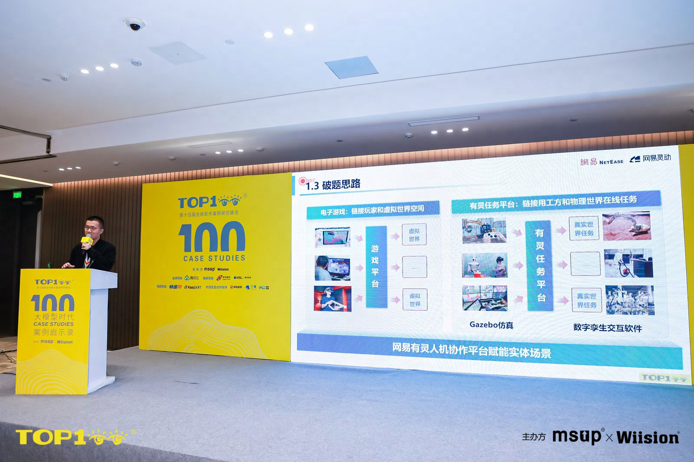
Modeling and Control of General Hydraulic Excavator for Human-in-the-loop Automation
IEEE 35th International Conference onTools with Artificial Intelligence (ICTAI 2023)
November 2023 | Atlanta, GA, USA
The paper, "Modeling and Control of General Hydraulic Excavator for Human-in-the-loop Automation," was presented at the IEEE 35th International Conference on Tools with Artificial Intelligence (ICTAI 2023). The research on human-in-the-loop automation for excavators was shared with the international community via an online presentation.
Full Paper (PDF): paper.pdf
Demonstration Video: YouTube
Event Photos
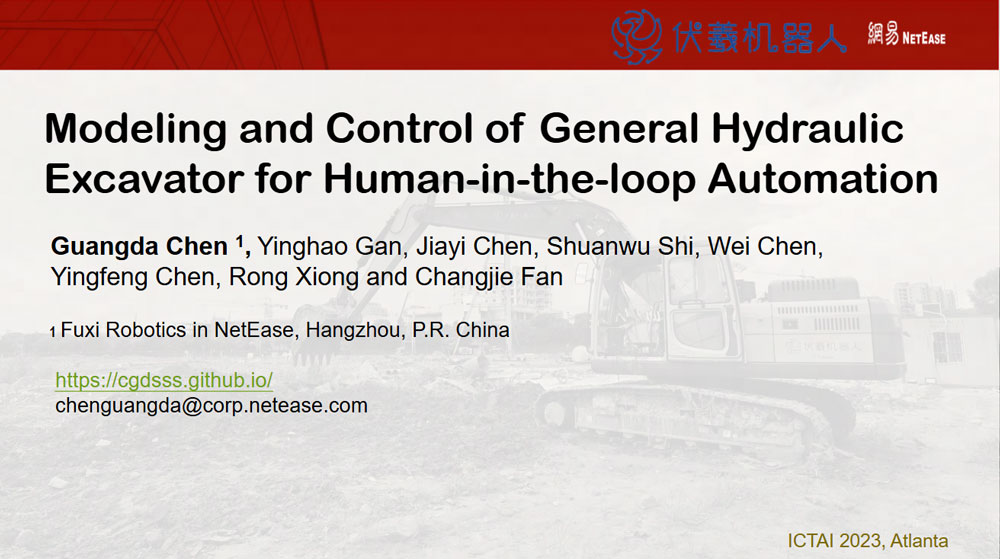
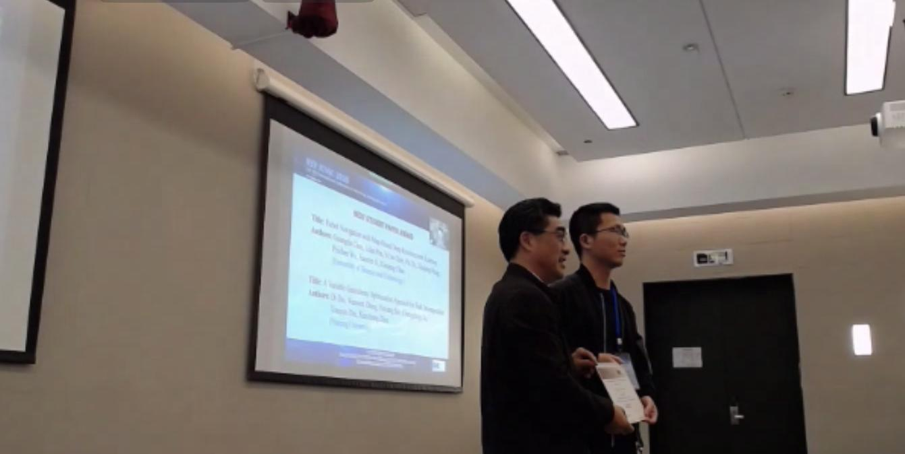
International ConferenceRobot Navigation with Map-Based Deep Reinforcement Learning
International Conference on Networking, Sensing, and Control (ICNSC 2020)
October 2020 | Nanjing, China
The paper titled "Robot Navigation with Map-Based Deep Reinforcement Learning" was presented at the ICNSC 2020. This research introduced a novel deep reinforcement learning framework for mobile robot navigation that effectively utilizes grid maps. The work was delivered through an oral presentation, highlighting its innovative approach to solving complex navigation tasks. This pioneering study laid the foundation for a series of subsequent research projects in DRL-based navigation within the research group. The significant contribution of this work was recognized with the Best Student Paper Award at the conference.
Event Photos
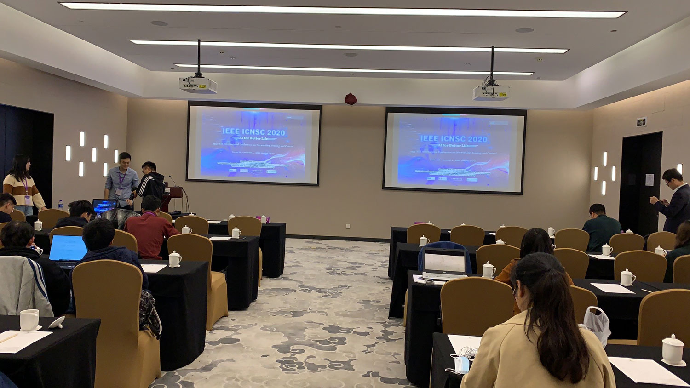
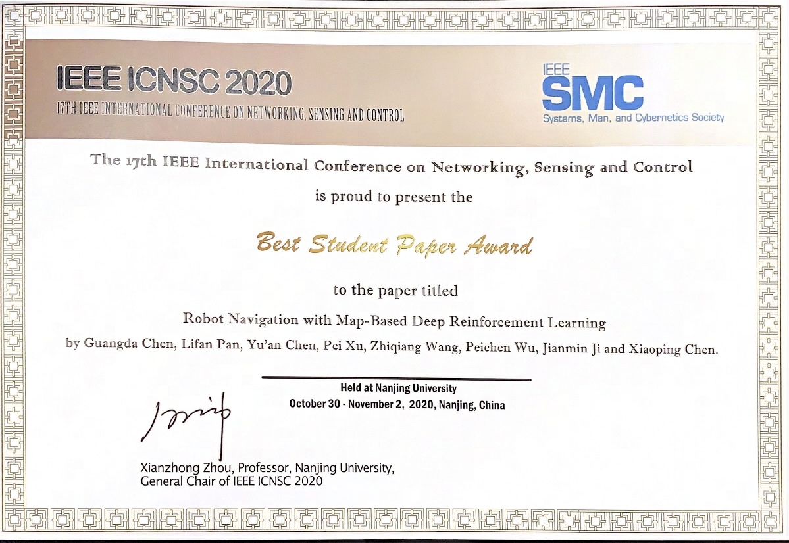